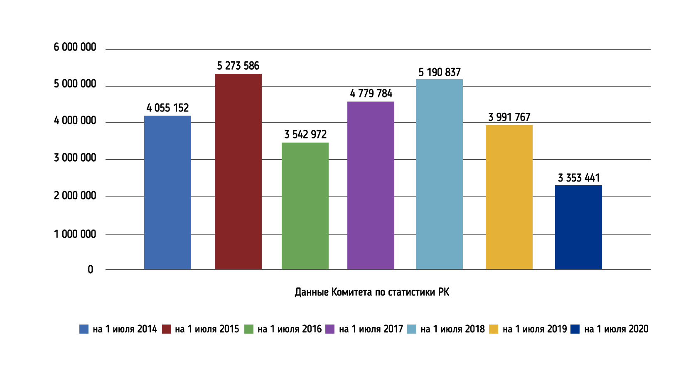
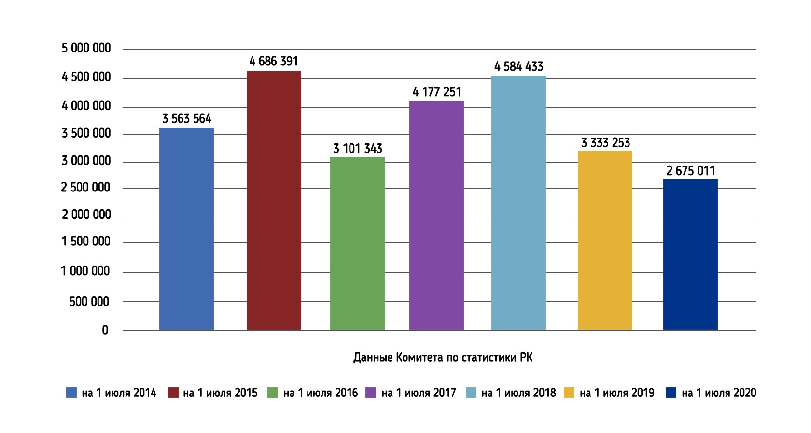
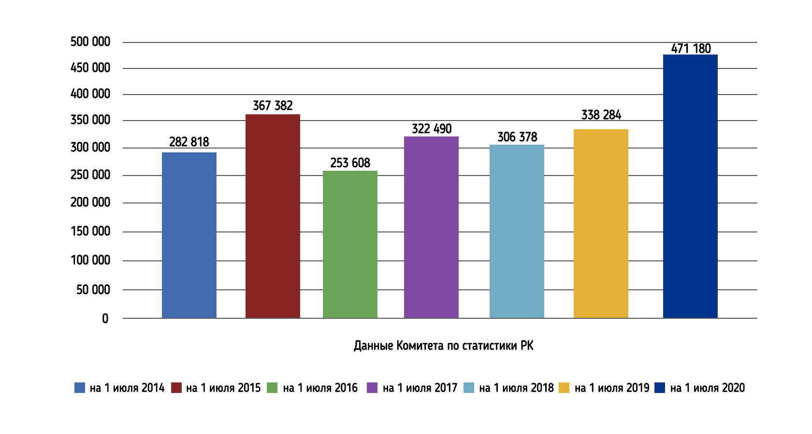
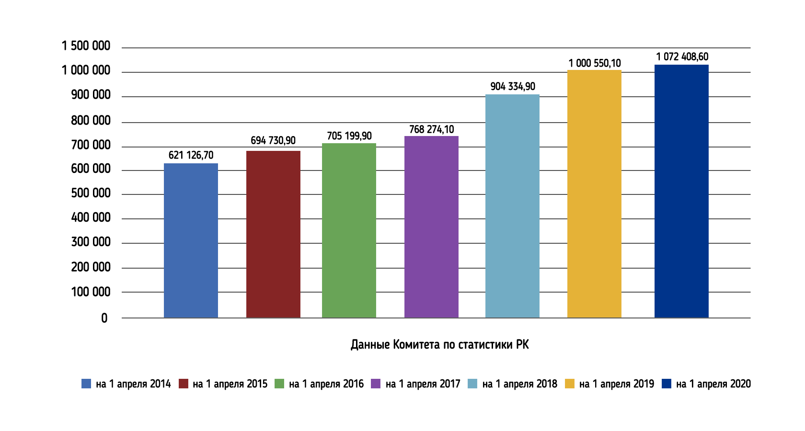
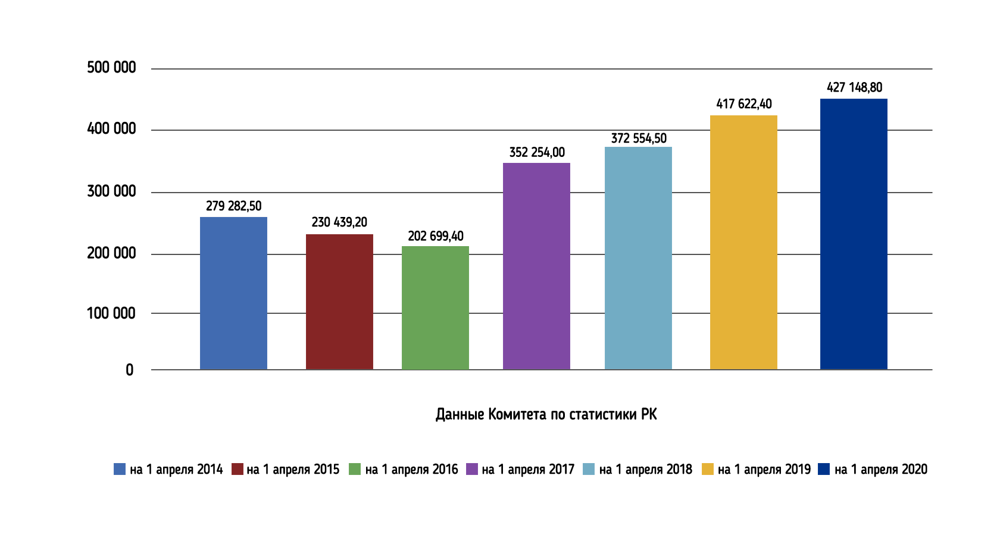
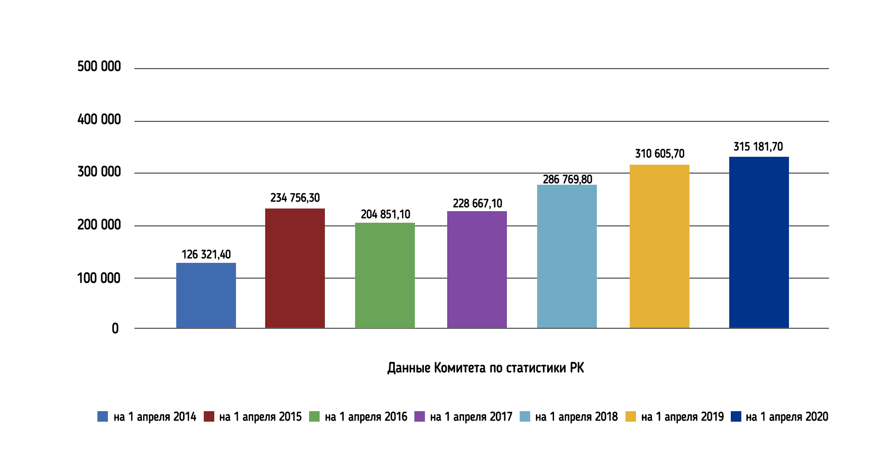
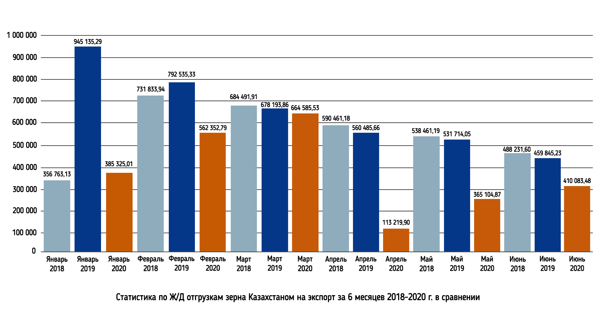

Наличие зерновых и бобовых культур в Республике Казахстан на 1
июля 2015-2020 годы

Наличие остатков пшеницы в Республике Казахстан на 1 июля 2014-2020 годы

Наличие остатков ячменя в Республике Казахстан на 1 июля 2014-2020 годы

Наличие семян масличных культур в Республике Казахстан на 1 апреля 2014-2020 г.

Наличие остатков семян подсолнечника в Республике Казахстан на 1 апреля 2014-2020 г.

Наличие остатков семян льна в Республике Казахстан на 1 апреля 2014-2020 годы

Статистика по Ж/Д отгрузкам зерна Казахстаном на экспорт, всего за 6 месяцев 2018 – 2020 г.
в сравнении помесячно
